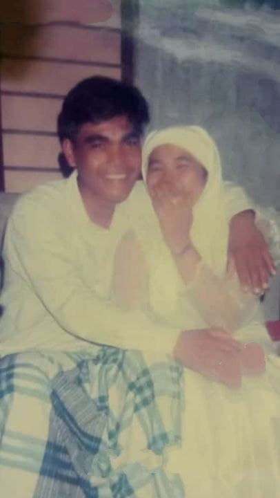

My father's name is Mohd Sahrul Bin Mat Nor and my father was born in Pahang. My mother's name is Mek Hawa Binti Jusoh and she was born in Terengganu. My dad is 50 years old while my mom is 51 years old. My father is a fisherman and my mother is a full -time housewife. Then, I had 6 siblings and we were all born in the same hospital which is Tengku Ampuan Afzan Hospital (HTAA). The first child is named Nurul Shazain Asyikin Binti Mohd Sahrul who is 28 years old. He works as an Immigration in Johor. He is married and has a daughter. The second child is named Ahmad Amirul Firdaus Bin Mohd Sahrul and is 24 years old. She works in a bakery and is still unmarried. The third child is Nurul Shazwanie Amira Binti Mohd Sahrul. She is 22 years old and works at a diner that is a little far from our house. He is also still unmarried. The fifth child is Ahmad Afizuddin Faiz Bin Mohd Sahrul who is 19 years old. He also works in the same place as his brother which is a bakery. Finally, the youngest child named Ahmad Aqasha Fikrie who is 10 years old and still attending school at Sekolah Kebangsaan Kuala Penor.